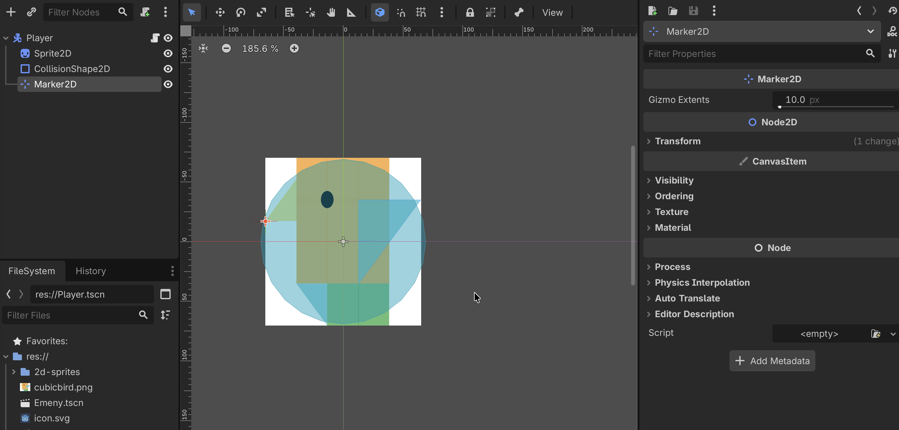
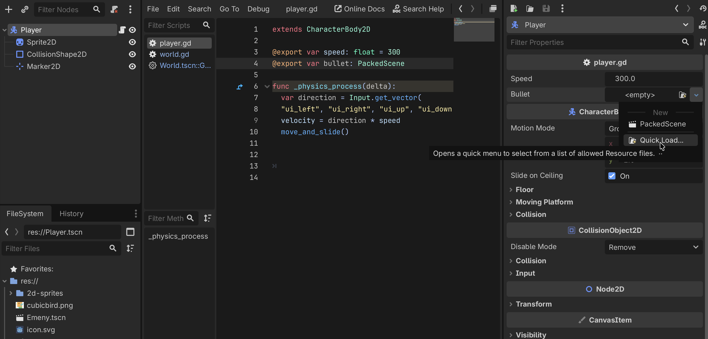

Area2D 感应体设计、方向计算与父子运动解耦
在独立场景 Bullet.tscn 中构建：


在 Player.gd 发射子弹：
# Player.gd
func shoot():
var target = get_nearest_enemy()
if target == null: return
var bullet = bullet_scene.instantiate()
bullet.global_position = $Muzzle.global_position
# 向量计算：计算指向目标的归一化方向
bullet.direction = (target.global_position - global_position).normalized()
# 注意：加到 parent (World) 而非 self，实现运动解耦
get_parent().add_child(bullet)